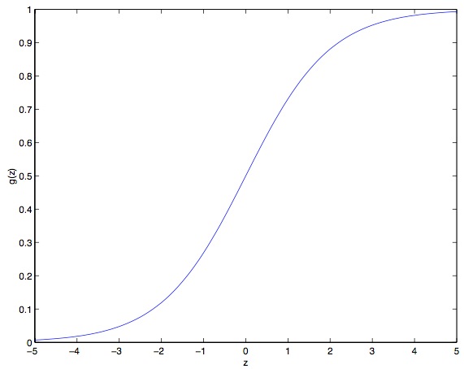

前言
cs229讲义 斯坦福大学的CS229课程是学习机器学习的必备之课，之前是由吴恩达主讲的课程，后来由于不明原因课程被斯坦福大学下架。
note1的主要内容：监督学习概览，线性回归机器概率解释，逻辑回归…..
重新理解，加油~
PART II 分类和逻辑回归
接下来讨论分类的问题，其实本质和回归问题很像，只是待预测的$y$值值域为个数有限的离散值的集合。
首先来看二分类问题，$y$只有两个取值，0 或者 1（此处讨论的问题也可以拓展到多类的情况）。
例如，假如要建立一个垃圾邮件筛选器，那么就可以用 $x^{i}$ 表示一个邮件中的若干特征，邮件是垃圾邮件时$y=1$，称为正类别（positive class），否则 $y=0$，被称为负类别，有的情况下也分别表示成 $“+”$ 和 $“-”$ 。
对于给定的一个 $x^{i}$，对应的$y^{i}$ 也称为训练样本的标签（label）。
5, 逻辑回归
忽略$y$取值于离散集合后，也可以按照前面线性回归的算法来由$x$预测$y$，但是这样构建的例子性能和表现都会比较差。而且，直观来看，$y\in\{0,1\}$，当$\quad h_{\theta}(x)>1 \quad or\quad h_{\theta}(x)<0\quad$都没有意义。
所以，换一个假设函数$h_{\theta}(x)$
其中，$g(z) = \frac{1}{1+e^{-z}}$称为逻辑函数或者sigmoid函数，下图是$g(z)$的函数图像

- $g(z)\rightarrow 1 \quad if \quad z\rightarrow\infty$，同时，$g(z)\rightarrow0 \quad if \quad z\rightarrow -\infty$；
- $g(z)\in(0,1)\quad and \quad h(x)\in(0,1)$；
- $g(z)$在$(0,1)$上光滑递增；
- $g(z)$还有些其他的性质会在后面讲到。
前面，约定$x_{0}=1$后，重写$h_{\theta}(x)=\theta^{T}x=\theta_{0}+\sum^{n}_{j=1}\theta_{j}x_{j}$。此处我们选定$g$来作为估计函数，先讨论sigmoid导数的某些好用的特性：
自行补充推导过程。
那么，给定逻辑回归模型后，怎么去拟合一个合适的$\theta$呢？
之前已经证明过，在一系列假设的前提下，最小二乘法回归可以通过最大似然估计来推出。接下来就给分类模型做一系列的统计学假设，然后用最大似然法来拟合参数吧。
首先假设
假设$m$个训练样本是独立生成，那么可以将带参数的似然函数写做：
类似常规处理方法，取对数之后更方便计算
怎么最大化似然函数呢？与线性回归中用到的求导方法类似，咱们这次就是用梯度上升法（gradient ascent）。仍然用向量的形式来对参数进行更新，也就是：
因为是求极大值，所以注意下式子中是+号而不是-号，用一个样本$(x,y)$来推导随机梯度法的导数公式：
请自行推导哦
所以，随机梯度上升的更新公式为：
跟之前的 LMS 更新规则相对比，形式上挺相似的，不过这并不是同一个算法，因为这里的$h_{\theta}(x^{i})$现在定义成了一个$\theta^{T}x^{i}$的非线性函数。尽管如此，面对不同的学习问题使用了不同的算法，却得到了看上去一样的更新规则，这个还是有点让人吃惊。这是一个巧合么，还是背后有更深层次的原因呢？在我们学到了 GLM 广义线性模型时就会得到答案了。
6，题外话：感知学习算法
现在岔开一下话题，简要地聊另一个算法，这个算法的历史很有趣，并且之后在讲学习理论时还要讲到它。
设想一下，对逻辑回归方法修改一下，强制它输出的值只能是0或1。要实现这个目的，很自然就应该把函数 $g$ 的定义修改一下，改成一个阈值函数（threshold function）
然后，令$h_{\theta}(x)=g(\theta^{T}x)$，使用上面定义的阈值函数$g$，然后更新规则即为：
这就是感知学习算法。
在 1960 年代，“感知器（perceptron）”被认为是对大脑中单个神经元工作方法的一个粗略建模，这个简单的算法也是我们后续在本课程中讲学习理论时的起点。
但一定要注意，虽然这个感知学习算法可能看上去跟之前讲的其他算法挺相似，但实际上这是一个和逻辑回归、最小二乘线性回归等算法在本质上完全不同的算法。
尤其重要的是，很难对感知器的预测赋予有意义的概率解释，也很难作为一种最大似然估计算法来推出感知器学习算法。
7，最大化$l(\theta)$的另一种算法
回到$g(z)$为sigmoid函数时的逻辑回归算法，重新讨论下最大化$l(\theta)$的算法。
首先来考虑牛顿法来求方程零点，如有函数$f: R->R$，求参数$\theta$使得$f(\theta)=0$，此处的$\theta\in R$ 是实数。
牛顿法的更新规则是：
这个方法可以通过一个很自然的解释，把它理解成用一个线性函数来对函数 $f$ 进行逼近，这条直线是 $f$ 的切线，而猜测值是 $\theta$，求解的方法就是找到线性方程等于零的点，把这一个零点作为 $\theta$ 值设置为下一次猜测，然后依次类推。

在最左边的图里面，可以看到函数 $f$ 和 $y=0$ 的图像，想要找一个 $\theta$ 来让 $f(\theta)=0$，这时候发现这个 $\theta$ 值大概在 1.3 左右。加入咱们猜测的初始值设定为 $\theta =4.5$，牛顿法就是在 $\theta =4.5$ 这个位置画一条切线（中间的图）。这样就给出了下一个 $\theta$ 猜测值的位置，也就是这个切线的零点，大概是2.8。最右面的图中的是再运行一次这个迭代产生的结果，这时候 θ 大概是1.8。就这样几次迭代之后，很快就能接近 $\theta =1.3$。
牛顿方法给出了求解$f(\theta)=0$，怎么用它来最大化损失函数$l$呢？$l$取最大值的点应该是导数$l’(\theta)$的第一个零点。所以，令$f(\theta)=l’(\theta)$，可以用同样的算法来最大化$l$，能得到如下更新规则：
思考下：如果是最小化函数而不是最大化函数呢？应该是怎样的更新规则？
近期介绍的逻辑回归中，$\theta$是向量，所以需要将牛顿方法一般化。多维空间中的牛顿方法（也叫Newton-Raphson方法）更新规则为：
此处的$\nabla_{\theta}l(\theta)$是$l(\theta)$关于$\theta_{i}$的导数，$H$是$n$维的矩阵（加上偏置项是$n+1$维矩阵），叫Hessian矩阵，表达式：
牛顿方法比（批量）梯度下降法更快收敛，更少的迭代次数就能获得极小。但是，一次牛顿迭代比梯度下降的计算量大很多，需要求Hessian矩阵及其逆矩阵，如果$n$不大的情况下，牛顿法明显有更快的优势。当用牛顿方法来解决逻辑回归的似然函数的最大化问题时，通常也把求解过程叫做Fisher scoring。
PART III 广义线性模型（GLM）
目前位置，我们讨论了一个回归($y|x;\theta\sim\mathcal{N}(u,\sigma^{2})$)和一个分类($y|x;\theta\sim Bernoulli(\phi)$)案例，$u$和$ \phi $是定义在$x$和$ \theta $上的函数。在本节，我们会发现这两种方法都是一个更广泛使用的模型的特例，这种更广泛使用的模型就叫做广义线性模型。我们还会讲一下广义线性模型中的其他模型是如何推出的，以及如何应用到其他的分类和回归问题上。
指数簇
在学习 GLMs 之前，我们要先定义一下指数组分布。如果一个分布能用下面的方式来写出来，我们就说这类分布属于指数族：
上面的式子中，$\eta$叫做此分布的自然参数（也叫典范参数），$T(y)$ 叫做充分统计量，我们目前用的这些分布中通常$T(y) = y$；而 $a(\eta)$ 是一个对数分割函数，$e^{-a(\eta)}$这个量本质上扮演了归一化常数的角色，也就是确保 $p(y;\eta)$的总和等于1